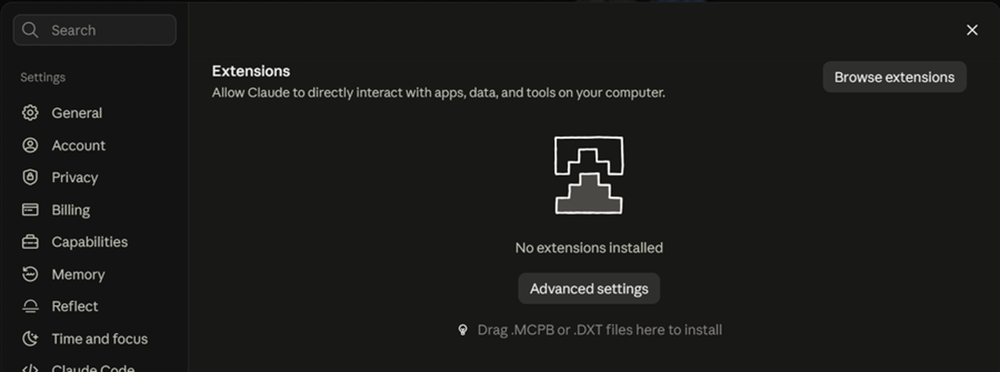
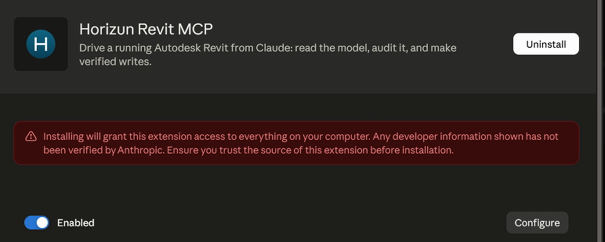

horizun-revit-__VERSION__.mcpb
.mcpb file from this folder onto that window.
The page says so itself: Drag .MCPB or .DXT files here to install. It is the shortest way and nothing has to be hunted for.
.mcpb.
That button sits under a red developer-tools warning; that is normal and does not mean anything is wrong.

